2. Provenance Paths
Five data entry paths converge to the same BuildResult.
Each has a different protonation strategy and charge source.
After building, OperationRunner::Run processes every
protein identically.
